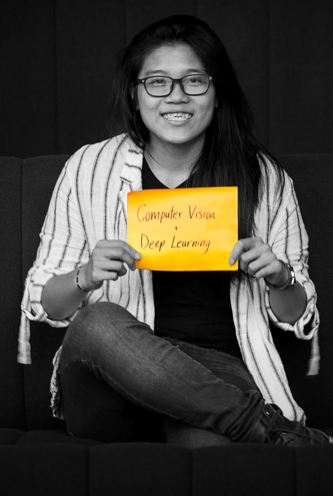

Kwan Suppaiboonsuk
A Big Reflection
New Engineers Final Assignment *Read on full-screen web browser for full experience.
read

New Engineers Final Assignment *Read on full-screen web browser for full experience.
readModderkolk would like to become an ever-flourishing company that can double the revenue and quadruple the profit in a 4-year timespan. To reach this goal, the value is put in people. This all begins by hiring intrinsically motivated people. To support them in doing their best work, they are given: (i) a higher goal to strive for together, (ii) autonomy to make their own decisions, and (iii) development opportunities to further improve their skills and knowledge. Apart from this, to allow them to work optimally, process improvement is what Modderkolk continuously invests in.
My project was formed to address the struggle in planning and organization of projects. The challenge is caused by multiple start and stop times within, and especially between, the processes that make up the production of control panel cabinets. This is a bottleneck in the efficiency of our production process. If the processes that make up the production of electrical control panel cabinets can be well-integrated, the production time of a cabinet can be shortened from one month to within one week. This can provide time to better plan projects and organize resources.
Pyramid of processes that make up the production process, along with the amount of time the process currently takes. The red boxes at the bottom are proposed projects targeted towards improving the process. All these projects come together to make up the vision.
For an efficient production process, we have developed a vision of a fully automated production line. This robot-led process collects data from various points throughout the production process to produce real-time insights. This data can have value in understanding how to further improve the planning and organization of our projects.
Apart from decreased production lead time, other benefits can be expected from automation. Production errors can be reduced, resulting in an increased quality of panel cabinets. Challenges in finding people to fill job functions in the production hall will also be addressed. For employees already working on the floor, the robot will take over repetitive tasks. This will give more time for the employees to complete tasks that should give them higher job satisfaction.
The vision of the project.
For a more extensive description of the company and innovation goals, refer to the previous 5-pager assignment.
As this is a large project, a development plan has been created to break down the project. The focus for my initial project will be on developing proof of concepts for the object recognition software.
The initial goals for the end of July 2019, were defined with Vincent on 12 December 2018. The goals are:
1. To have a working object classifier with over 95% confidence for the standard cabinet (the code should be a basis for a sorting robot).
2. To have a user-tested system with end-users (logistics employees).
3. To have a database of images of materials.
As of 31 July 2019, the following is what I have achieved:
- A system that can recognize 9 objects often found in a standard cabinet; A classifier model that performs well with all the classes being correctly classified over 95% of the time (Model Evaluation Report).
- An approved plan for implementation for further image data collection and involvement of end-users as co-creators.
- An implementation of the initial system in Magic, the company ERP (Enterprise Resource Planning) system.
An overview of the project deliverables can be seen below.
I did not completely reach the goals that were set, but I am still very satisfied with the progress that has been made. More insights were generated than I expected and I have gained an understanding of the project on multiple levels – technical software and systems, business, and the in-betweens. One of the most important achievements for me is in connecting the dots between the larger vision of the project to the part that I am working on (for the logistics process). Over the past year, I have grown to understand my project more and can create a story that binds the scope of the company values to the project vision to various sub-projects.
As for the development goal (Goal No. 1), I have come to realize that the initial goal was not specific enough. It does not relate the frequency to the accuracy and could be interpreted as having a 95% confidence (accuracy) for 100% of the predictions made (frequency). In the end, what I have achieved is a correct classification, of varying confidence (accuracy), for over 95% of the predictions made for each object (frequency).
Nevertheless, I have also come to realize that the main challenge for a proof of concept is not to have a super accurate model, but to have a working overall system. At an initial stage, it is better to focus on the design of the system, as the model can always be better trained at a later stage. In the beginning, I was too focused on trying to train a good classification model. The flaw of this goal is that it focuses too much on the performance of just a part of the system and not the system as a whole. Once I shifted my focus off from model training, I was able to achieve more results in developing a system for the proof of concept.
I have managed to create an initial proof of concept system in which an implementation has been integrated into the company’s ERP system. During the development process, I have involved the logistics employees who are the intended end-users. This was done through a value stream mapping workshop to better understand how they work and where the “pain” points are in their workflow. Some of these points were taken into account for the development.
This system has not yet been tested with the intended end-users, which means that I did not reach the second goal. With the system having a knowledge base of only 9 components, we thought that it would not yet be a good time to test the system with the end-users. Testing the system with them now would show how inefficient using the technology can be and could create a negative experience. We want to avoid this, as we would like to already help them make a smooth transition towards a robotic production line.
A plan has been made for the implementation of an image data collection system that will involve the end-users as co-creators. The plan is to have this system deployed by the end of August 2019. This initiative will provide a basis to communicate the project vision to the logistics employees. It will also grow the knowledge base for the object recognition system, making it more usable.
The data collection system will also further advance the third goal, which is at the moment achieved to a certain degree. There is a collection of images for the 9 components. There is also a system that generates more images that can be used for model training (data augmentation). The next step would be to create a pipeline that can continuously update this database for future model retraining.
Upon beginning New Engineers, my goals were:
1. To learn more about innovation;
2. To learn more about deep learning and apply the knowledge by training a model that works;
3. To be able to efficiently and structurally communicate my thoughts and ideas.
With a focus on innovation management, my personal track for New Engineers (developed by Vincent) can be found in the table below.
I was able to reach my goals by working on the skills, knowledge, and attitudes (SKAs) determined as my building blocks. Click through the slides below to read more about what I have done to work on the SKAs and how it has helped (Learning & Progress), along with what I have achieved (Achievements). An overview of other skills can be found in the 360 degrees input section below the slides.
Inputs on development have been collected from peers, coaches, and mentors. They have been related to each skill and attitude and can be found in the interactive visualization below. Inputs have been collected from the Trakstar feedback system, individual discussion meetings, and feedback sessions throughout the New Engineer weeks.
Click on a node to see the inputs.
Skill: Enterprising
"During the Design Thinking sessions you were stepping in to get the group in a direction. YOu saw some opportunities in DT approach andwas willing to try them to see what you could gain out of it for the V@T [Value@Travel - New Engineers group project]"
- NE coach (Trakstar 14/4/2019)
Skill: Leading
We have a weekly team meeting for the project in front of our planning poster. At the beginning of the year, Simon and Nick would often be the ones asking me questions and I would listen. Now, I am really the presenter and I am the ones asking them questions.
- input from mentors (individual discussion, July 2019)
I share opinions and feedback outright.
- input from peer (individual discussion, NE Week 8)
Leading during the organization of the data conference.
- input from peer (individual discussion, NE Week 8)
Skill: Creating
"Creative" - peer (feedback session, NE Week 8)
Sometimes I think too thoroughly, making it difficult to get creative.
- input from NE coach (Trakstar, 14/4/2019)
Skill: Communicating
Daniel understands my project now, when before he didn’t, especially the first couple of times I explained it to him.
- input from peer (individual discussion, NE Week 8)
Project story is more aligned; improvement in communication.
- input from NE coach (individual discussion, NE Week 8)
"You have an eye for others!"
- NE coach (Trakstar, 14/4/2019)
"Really like the way you speak - concrete and understandable."
- peer (feedback session, NE Week 8)
Skill: Learning
It was clear what I wanted to learn (in innovation) and I went out to make sure I got to learn what I really wanted to learn
- input from peer (individual discussion, NE Week 8)
Took ownership during the outpost to make sure I got the innovation roadmap done.
- input from peer (individual discussion, NE Week 8)
"Willing to apply new things and feedback"
- peer (feedback session, NE Week 8)
Attitude: Boundless
Questioning what I am hearing.
"Super dedication"
- peer (feedback session, NE Week 8)
Attitude: Curious
I look further than just the project (eg. innovation within Modderkolk). I also try to combine current working methods within my company in my own project (eg. trying to use the A3 from LEAN as a communication platform for the organization).
- input from mentors (individual discussion, July 2019)
Attitude: Disciplined
"Decision making in group to help move forward instead of continuous discussion."
- peer (feedback session, NE Week 8)
"Super dedication"
- peer (feedback session, NE Week 8)
Attitude: Eager
Eager to understand how processes work and to get a broader perspective.
- input from mentors (individual discussion, July 2019).
Eagerness of wanting to learn can be seen; I try things out and it could be seen that I am trying to apply what I have learned.
- input from peer (individual discussion, NE Week 8)
No information for this node, yet.
Other things that I can work on improving on is in being more entrepreneurial – from leading to the enterprising spirit. I sometimes underestimate my own qualities and often allow others to make decisions too often. I have the capabilities to bring others along and I should exercise that more. To speak out to lead the group and not just to give an opinion is still something I could do more of.
I need to work on knowing when it is important to double-check so much, as it sometimes hinders my decision making. This also has to do with being more daring to take risks. Taking actions is not hard for me, but sometimes taking risks is. I will eventually need to grow in this skill to further reach my ambitions of growing an innovative team.
To further improve on my communication skills, I can continue to improve on storytelling and sharpening skills in simplifying complex topics. Concerning my project, this is something I will have to do to further communicate and promote my project.
Below are my ambitions and what I would like to work towards in the coming years. Below the description of each ambition is a list of what I plan to do to move towards realizing the ambition.
To help initiate a company-wide movement towards a more innovative culture.
- Making informative posters on various technology, starting with those related to my project (AI, big data, image recognition, etc.)
- Organizing an ongoing series of innovation workshops for cell managers.
To grow and lead a team for innovation research and development.
- Using the developed proof of concepts to scale the communication within the company (communication through poster and eventually deployed proof of concepts).
- Growing the team through increased involvement of internal end-users of the product.
To grow in development knowledge - from user experience design to development to implementation. I would like to become someone who can see the whole thing through.
- Continuing with my own self-development by setting aside time to learn new technologies and apply them.
- Continuing to learn from other people and their knowledge and specialties by staying curious.
New Engineers has provided me a basis to further develop myself. What is valuable is not only the knowledge that I have attained in this past year, but the way of thinking and the attitude of taking ownership.
Even though some of the knowledge was not my core focus, they are still very useful skills that I have utilized and can see myself utilizing in the future, both in career and life. For example, facilitation skills. I've used some of those skills to help in preparing for meetings and am using it to help plan an innovation workshop. Techniques of NLP (Neuro Linguistic Programming) have also given me insights for communication.
Beyond all the knowledge, New Engineers has allowed me to develop in my soft skills, as well as my learning skills. A lot of times people don't question how you learn, but New Engineers has helped to sharpen my 'learning how to learn' skills. This, along with the attitudes that they have encouraged, has provided me the basic bundle to continue to develop beyond an engineer.